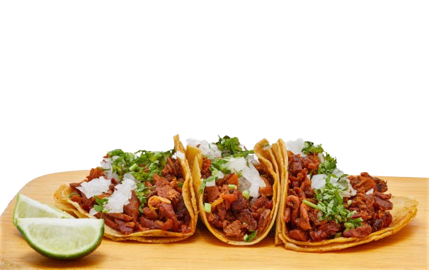

El Origen Del Taco
El origen de los tacos mexicanos se remonta a la época precolombina en México, mucho antes de la llegada de los españoles. Los antiguos habitantes de Mesoamérica, como los aztecas, mayas y otros grupos indígenas, ya consumían alimentos envueltos en tortillas de maíz. Las tortillas de maíz eran un componente básico de la dieta de estos pueblos indígenas, y se utilizaban como una especie de utensilio comestible para sostener y comer otros alimentos. Rellenaban las tortillas con una variedad de ingredientes, como pescado, carne, frijoles, frutas y más, creando así los antecedentes de lo que hoy conocemos como tacos.
